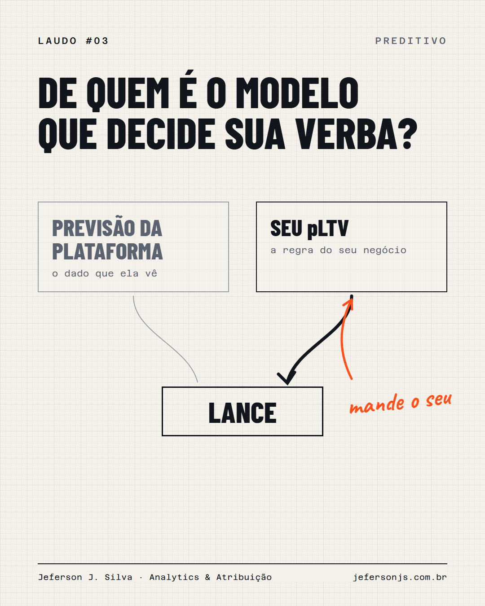

No Google Marketing Live 2026, o Google apresentou as Qualified Future Conversions: o Gemini estima as conversões que uma campanha vai gerar em até 6 meses, a partir do engajamento de hoje.
Leitura rápida: ótimo, o Google vai otimizar para valor de longo prazo.
A leitura que eu faço: o Google está construindo o próprio pLTV do seu cliente. Com o dado que ele enxerga, não com o seu.
E o dado que ele enxerga não sabe que, no seu negócio, o cliente que importa é o que repete em 7 dias. Ou o que nunca precisou de cupom.
Num SaaS B2B que acompanhei, o time gastava mais de meio milhão por mês em mídia pagando o mesmo CAC por dois perfis opostos: o que vira recorrente e o que some depois do primeiro uso.
Foi para isso que montei o Signals. Os sinais de ICP e de risco saíam do BigQuery para o CRM e para as listas do Google Ads e do Meta Ads, e passaram a qualificar as campanhas pela regra do negócio, não pela da plataforma.
Mandar valor previsto por conversão offline ou CAPI não é novidade. A novidade é que, se você não mandar, a plataforma tende a preencher esse espaço com a previsão dela.
De quem é o modelo que decide onde vai a sua verba?
30 minutos, de graça. Entro nas suas plataformas e mostro os três problemas mais críticos de mensuração.
Quero meu diagnóstico grátis →